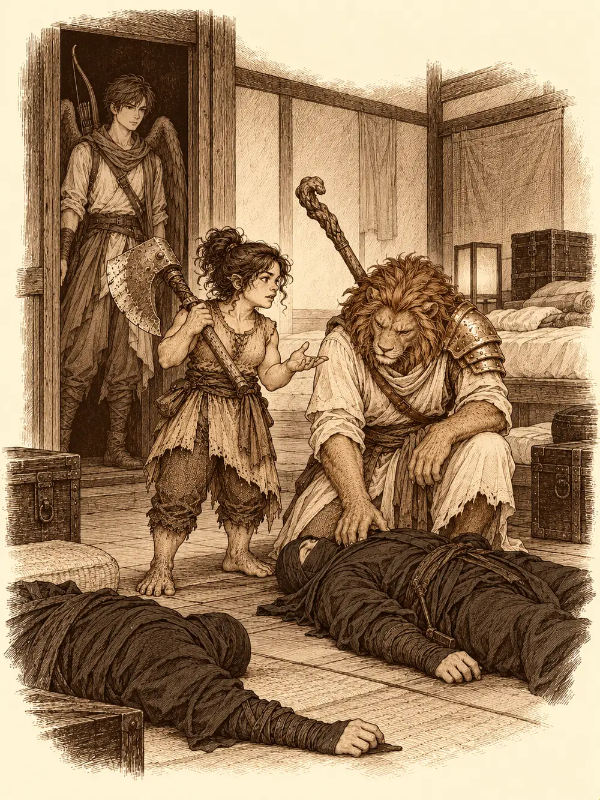

Capítulo 24
Local clandestino
Libro II · El favor del shogun
La espada de Shizuka se encendió con un fuego verde, pálido como el musgo al trasluz, y la niña la descargó con todas sus fuerzas contra la espalda de Sirth. Falló por un palmo. El clérigo ni siquiera se volvió.
"Ya lo he visto", dijo. "No hace falta que me lo enseñes otra vez".
Shizuka resopló y la llama se apagó entre sus dedos con un siseo. Jin le había enseñado el truco durante la semana de camino desde Sho, a cambio de que se portara bien, y la niña no había dejado de practicarlo: dos dedos sobre la hoja, una palabra a media voz y el acero envuelto en llamas verdosas. Sirth había pasado esa misma semana en Ukio sin saber nada de ella, y desde el regreso la vigilaba con la atención crispada de quien ya la ha visto escaparse una vez.
Volvían con la bolsa llena y un título nuevo, cazadores del shogun, y aquello se notaba en cómo alguno levantaba la barbilla al cruzar el patio. Ahora podían cobrar con todas las de la ley. El enano, que había visto a Sun Gukon esforzarse por no matar a la araña de la capital, le había enseñado música por el camino y le había escrito partituras para cuando él no estuviera. Hayate, que no había ido a Sho, recorría los alrededores con las plumas recogidas sobre la espalda buscando un sitio donde levantar un altar a la naturaleza.
"Un rayo no te cae encima todos los días", explicó, sin dramatismo. "Volví a la vida. Estoy ordenándome las cosas".
La carta de Sun Gukon tenía una caligrafía solemne que no le pegaba nada. El mono se la había entregado en el camino de vuelta, antes de separarse de ellos, y alguien se decidió por fin a leerla en voz alta.
"Mis estimados compañeros de gremio, y a la traviesa Shizuka, y al maldito gato", empezaba. "Con una tristeza profunda y un pesar inconsolable os comunico que he decidido emprender un viaje hacia mi templo en el norte para recluirme y meditar. El amor, por ahora no correspondido, de la encantadora Zia me ha instado a convertirme en alguien digno de su afecto".
Meditaría, compartiría tiempo con la gente de las aldeas cercanas para aprender de sus vidas, seguiría practicando la música. Todo para hacer de Zia su reina y de sí mismo un rey digno de su amor. Rogaba que le comunicaran a la tabaxi su triste partida, porque aquel era su último y desesperado intento de merecer su corazón. En una posdata daba las gracias al enano por los pergaminos.
"Qué le pasa a ese mono", murmuró Sirth.
Era media tarde y alguien hablaba ya de echarse la siesta cuando la puerta de los ojos se abrió de golpe y entró corriendo uno de los mujina de la guardia, sin aliento.
"¡Señores, señores! A la entrada hay alguien herido. Os busca a vosotros".
"Niña, quédate aquí", dijo Jin, y salió el primero.
El hombre estaba medio tendido junto al umbral, sostenido por el otro mujina. Jin lo reconoció por las ropas oscuras: era el shinobi de la emboscada en el camino de Sho, el que había dejado marchar con vida. Tenía la espalda y el pecho cruzados de arañazos, y uno de los brazos le colgaba de una manera que costaba mirar.
"Por fin os encuentro", jadeó. "Mi clan ha sido erradicado. Unos yokai entraron en nuestra base. Tenéis que matarlos".
Se estaba desangrando. Hubo un instante de miradas cruzadas sobre quién debía ocuparse de él, hasta que Sirth chasqueó la lengua, se arrodilló y le acercó una poción a los labios. El hombre bebió, tosió, y la respiración se le fue asentando.
"No sabía a quién acudir. Vosotros me perdonasteis la vida".
"De la recompensa ya hablaremos", contestó Jin. "Me deberás dos favores: no matarte y ayudarte a salvar a tu gente".
"No sé si queda alguien. Creo que soy el único superviviente".
Podía guiarlos, aunque no luchar. Shizuka se quedó esta vez en la base.
Al cruzar Ukio vieron cuánto había cambiado el pueblo. Quedaban pocos árboles quemados, los huertos rebosaban de hortalizas y por las calles se veía más gente. Había madera amontonada en algunos solares, aunque de momento no tenía forma de muralla. El nombre del shogun también hacía su trabajo: al herrero le llegaban suministros de la capital, y en su taller colgaban armas y armaduras mejores que las de antes. Haru les entregó cinco monedas a cada uno. El enano dejó otra aportación para las reformas del burdel y, por el camino, le puso quince monedas en la mano a un campesino especialmente trabajador, en voz bien alta, para que los demás tomaran nota. En el puesto recién terminado de Kimiko no hubo suerte: sus mercenarios estaban fuera, de misión, y tardarían días en volver.
Caminaron varias horas. Al pie de una pequeña montaña, entre los árboles, apareció una casita con letrero de armería, tan fuera de lugar en aquel paraje que resultaba sospechosa.
"Aquí es", dijo el shinobi. "Yo me quedo. Sería un estorbo. Id al desván: allí hay una puerta secreta. Esto es una tapadera".
Del enemigo sabía poco. Parecían volverse invisibles y eran más de uno.
Por dentro, la tienda daba el pego: mostrador, armas corrientes, nada que llamara la atención. El enano encontró la caja de la recaudación y se guardó las veinticinco monedas antes de que nadie pudiera opinar. En la sala de al lado había una forja, y entre los restos Jin encontró un par de gotas de oro fundido, endurecidas en guijarros sin forma. En el desván, entre cajas vacías y trozos de hierro, se colaba una corriente de aire por debajo de una pared. Apartaron las cajas y apareció un muro con marcas en los bordes, como el contorno de una puerta. Era piedra de la montaña. Empujaron y cedió con un roce sordo.
Nada más entrar, Hayate pisó algo que tintineó. Una moneda de oro. Y otra, y otra, formando un rastro brillante que se perdía pasillo adelante, como si alguien quisiera llevarlos a algún sitio. No se veía ni un ratón; los bichos de aquellos túneles habían huido de algo.
En la sala común, donde los shinobi comían y pasaban las horas, había dos cadáveres destripados, con miembros arrancados y tirados en la otra punta. Zarpazos de tres o cuatro garras. La puerta había estado cerrada y las paredes no tenían agujeros. Uno de los cazadores se agachó sobre la sangre y fue leyendo en voz alta las huellas: algo que caminaba sobre dos patas y apoyaba a ratos las manos, como un mono grande. Las pisadas cruzaban la sala de un lado a otro y, al salir de la sangre, desaparecían. Los muertos llevaban armaduras ligeras, espadas cortas y granadas de humo. El enano recogió estas últimas y le dio una a Jin y otra a Hayate.
"Por si tenemos que huir. Que no se quede nadie tirado".
Más adelante, por una puerta entreabierta, se escapaban un hilo de luz y un murmullo de voces. Hayate se fundió con las sombras y se acercó. Hablaban en la lengua común, decían que estaban todos muertos y que deberían irse. Vio un dormitorio con camas y baúles, dos shinobi más en el suelo y, muy cerca, a una halfling diminuta con un hacha enorme al hombro, que hablaba moviendo mucho las manos. Inclinado sobre uno de los cuerpos había un leonino con túnica, una hombrera dorada y un bastón cruzado a la espalda. Hayate miró primero el filo del hacha. No tenía sangre.
Volvió sin que lo vieran y lo contó: no parecían culpables, pero no quería fiarse ni provocar una pelea innecesaria. Jin decidió presentarse a su manera, que no era sigilosa, y empujó la puerta. La halfling se le plantó delante con el hacha en guardia, un arma casi más grande que ella. El leonino dio un respingo y le lanzó un rayo de hielo que le pasó silbando junto a la oreja.

"¡Ay, perdone! Disculpe". Bajó las manos. "Tranquila, Cleo, son humanos".
Se llamaba Mufasa, y era mago; para demostrarlo hizo bailar sobre la palma unas lucecitas de escarcha, luego un pequeño rayo y luego una llama. Cleo era su amiga, pequeña pero fuerte, y no llevaba armadura. Venían siguiendo a unos yokai que habían excavado un túnel a través de la roca hasta aquel escondite. Mufasa tocó los cadáveres con la punta del bastón.
"Gente de la noche. Lo extraño es que no se han comido a ninguno".
Cuando oyó lo del rastro de oro, sacó un cuaderno grueso lleno de dibujos de yokai hechos por él mismo y pasó páginas hasta una criatura de brazos largos.
"Un dodomeki, creo. Se alimentan de dinero y se vuelven invisibles".
Alguien le preguntó si podía ver lo invisible. Mufasa cerró el libro con pesar. Eso no. Pero algo podrían hacer juntos.
"Yo partiré cualquier cosa por la mitad", dijo Cleo.
Se unieron a ellos. Al volver al pasillo, la halfling fue recogiendo las monedas del rastro una por una, y más de uno la sorprendió mirando de reojo al enano.
En la habitación del jefe, que yacía tan muerto como los demás, el enano fue derecho a los papeles: mapas de Sho y de Ukio con casas marcadas por símbolos distintos, un código que no supieron descifrar, y lo que parecía el plano de un gran robo, sin indicación de su objetivo. Se lo guardó todo, con las treinta monedas del muerto y un traje de shinobi, y se quedó mirando la cama.
"Pienso volver a por ella".
En el almacén del fondo encontraron al primero, sentado de espaldas entre cajas y cofres, estirando unos brazos larguísimos para recoger monedas. Cantaba en abisal, una lengua áspera que Sirth entendió sin esfuerzo:
"Monedas bonitas, monedas buenas. Todas buenas, las monedas".
Alguien pronunció las palabras que abren cerraduras y un cofre junto a su cabeza saltó con un estruendo metálico. El dodomeki se sacudió el ruido de las orejas y se volvió despacio, sonriendo. Ya los había visto.
Mufasa disparó una cuchilla de hielo que reventó en esquirlas. Cleo echó a correr entre las piernas de los demás, chillando, con el hacha en alto. Las flechas de Hayate se clavaron una tras otra y dejaron a la criatura moviéndose como en barro, y entre disparo y disparo el arquero fue apagando luces para hundirse en la penumbra. Entonces aparecieron los otros dos. Uno se materializó a la espalda de Sirth, lo golpeó dos veces, y con cada golpe una mano larga le hurgó en la bolsa hasta dejársela vacía. Después las criaturas se olvidaron de él y buscaron bolsillos más llenos. Golpeaban, robaban y se esfumaban.
Las hojas les resbalaban por la piel como sobre cuero viejo, y la pelea se alargó. El enano sostenía a quien flaqueaba con curaciones e historias, y en un momento le dejó a Jin en la garganta un aliento de fuego que este escupió contra el enemigo. Mufasa tocó a Hayate y el arquero empezó a moverse el doble de rápido. Cleo peleaba con una furia que no le cabía en el cuerpo. Sirth alzó el colgante de Bhaal, la calavera con sus gotas de sangre.
"Que la sangre de mis enemigos les haga perder la conciencia".
Los dodomeki empezaron a fallar golpes que antes acertaban. El clérigo los castigaba con la energía fría de su dominio de muerte, y una espada espectral cortaba sola a su lado. Jin abatió al primero. Cleo partió al segundo de abajo arriba, se quedó un instante con la barbilla goteando sangre y corrió a por el siguiente. El último cayó presa de una risa incontrolable que le metió el enano en el cuerpo, y allí, retorciéndose a carcajadas, recibió el espadón de Jin.
"Eran duros", resopló Mufasa. "Y no me habéis dejado sitio para mis hechizos de destrucción".
Detrás de las cajas había unas cinco mil monedas, lo que los dodomeki no habían llegado a comerse. Hubo un silencio de cuentas mentales. Alguien sugirió decirle al hombre de la entrada que las criaturas se lo habían tragado casi todo. Sirth, salpicado de sangre, los miró como si no los conociera.
"Pretendéis robarle a ese pobre hombre herido".
Fue a buscarlo. Nada más entrar el shinobi, el enano se le plantó delante y le dio un mazazo en la cabeza. El hombre se llevó la mano a la sien y, con mucha dignidad, dijo que podían quedarse una parte si le dejaban algo para sobrevivir. Para montar algo. Se repartieron mil por cabeza entre los cuatro cazadores. Jin le puso cien de las suyas en la mano.
"No solo te doy dinero. Te doy un propósito. Vente al gremio de cazadores".
"Algo podría hacer, aunque no suelo cazar yokai".
"Todo el mundo empieza de alguna manera".
Sirth le entregó sus mil monedas enteras.
"Tome, señor. Para que monte cosas honradas". Miró a los demás. "Mira que sois ratas".
Luego descubrió que sus compañeros llevaban tiempo cobrando de cada encargo mientras él cuidaba de la casa, y se le encendió la cara.
"¡Yo pensaba que hacíamos esto para ayudar a la gente! ¿Y yo llevo todo este tiempo sin cobrar?".
"Te acabamos de dar la mayor paga de tu vida".
"¡Y se la he dado a él, porque era suya!".
Salió con el shinobi del brazo, y lo oyeron alejarse por el pasillo quejándose a un hombre que apenas se tenía en pie de que lo tenían cuidando a una niña repelente y a un bebé mientras los demás se lo llevaban todo.
El enano despellejó a los dodomeki y pagó a Mufasa y Cleo para que le ayudaran a sacar la cama del jefe.
En Ukio, los dos forasteros quisieron conocer el puesto de Kimiko, y Jin se les adelantó para hablar con ella. Mientras esperaban fuera, el enano les advirtió que tuvieran cuidado con Jin, que solo luchaba por sus intereses y que a él ya lo había traicionado dos veces. Mufasa asintió con educación. Cleo no oyó nada; seguía mirando al enano, y al entrar se dio de bruces contra el marco de la puerta.
Dentro, Jin ya había empezado.
"Kimiko, esta base tuya es pequeña. ¿Y si te enseño la mejor que vas a ver en tu vida? Tiene hasta un túnel de escape".
"¿Y qué me vas a pedir?".
"Una pequeña comisión. El uno por ciento".
Kimiko lo miró por encima del parche y dijo que iría a verla algún día y se lo pensaría. Jin mencionó que tenía una niña a la que alimentar, y ella levantó una mano.
"A mí no me vengas con problemas de padres".
El shinobi se despidió de Sirth en la taberna y entró a descansar. No fue el único. Cuando el clérigo asomó la cabeza poco después, encontró a Jin y a Hayate sentados ante dos cervezas recién servidas.
"Jin. Hayate. Para casa, que la niña está sola".
Jin protestó y Hayate juró que él no había sido. Sirth se remangó, y la mano se le iluminó de un morado sucio, como un cardenal reciente.
"¿Me estás amenazando con la mano?".
"Te estoy llevando a casa".
Salieron los tres dejando las jarras a medias. Sirth caminaba delante, con sangre seca en el cuello de la túnica, quejándose de la niña, del bebé, de las tres horas que los demás pasaban golpeando cualquier cosa mientras él daba dos tortas y casi lo mataban. Detrás, Jin y Hayate lo seguían con la cabeza gacha, como dos chiquillos sacados de la fiesta por la oreja, mientras se encendían las primeras luces de Ukio.